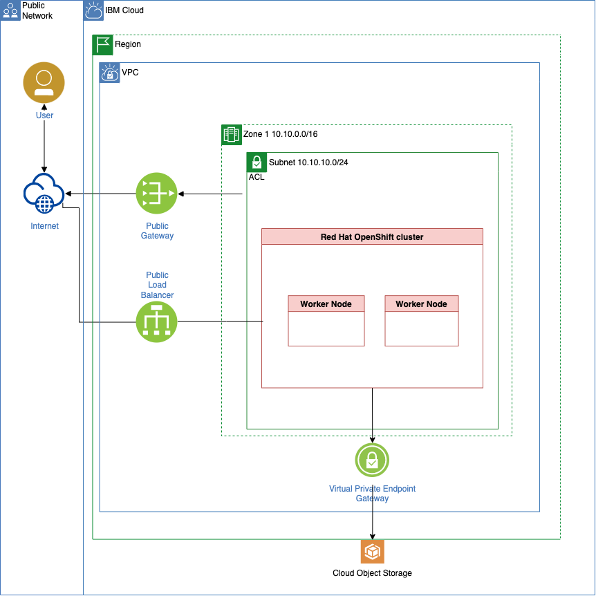

Overview¶
1. Objective¶
The objective is to understand how to build new modules for the Technology Zone Accelerator Toolkit.
2. What does the project do?¶
This project does inspect the template-terraform-gitops and needs to be seen in combination with the gitops-verify-swagger-editor-example outcome.
The repository documents how to create a module for Technology Zone Accelerator Toolkit step-by-step using the helm guestbook application example from the Argo CD GitHub repository.
2.1 Understand the template-terraform-gitops¶
The template-terraform-gitops is a part of the How to instructions of the Technology Zone Accelerator Toolkit.
The module covers the GitOps topic.
3. Use the template-terraform-gitops to create a module to deploy the guestbook example¶
These are the main tasks:
- Create a GitHub repository based on the
gitops templatefromSoftware Everywhere - Configure the
guestbookmodule - Create an own
catalogfor theguestbookmodule - Create a
BOM(Bill of material) where theguestbookmoduleis used and create the needed terraform output withiascable
We will use later two catalogs and one BOM (Bill of material). here is a simplified view of the depencencies we will have later.
3.1 Perpare the environment¶
3.1.1 Create a new GitHub repository based on the gitops template¶
We clone the gitops template repository to our local computer and we going to create our gitops-terraform-guestbook repository.
Step 1: Clone the GitHub gitops template repository to your local computer and create a new GitHub repository based on that template¶
You can follow the steps in the blog post to do this.
Then you should have following folderstructure on on computer:
├── LICENSE
├── README.md
├── main.tf
├── module.yaml
├── outputs.tf
├── scripts
│ └── create-yaml.sh
├── test
│ └── stages
│ ├── stage0.tf
│ ├── stage1-cert.tf
│ ├── stage1-cluster.tf
│ ├── stage1-cp-catalogs.tf
│ ├── stage1-gitops-bootstrap.tf
│ ├── stage1-gitops.tf
│ ├── stage1-namespace.tf
│ ├── stage2-mymodule.tf
│ ├── stage3-outputs.tf
│ └── variables.tf
├── variables.tf
└── version.tf
3.1.2 Install iascable¶
We install iascable to ensure you use the lates version.
Step 1: Install iascable on your local computer¶
curl -sL https://iascable.cloudnativetoolkit.dev/install.sh | sh
iascable --version
- Example output:
2.17.2
3.1.2 Install a container engine¶
In this example we use the unsupport container engine colima, because that worked for us.
Step 1: Install colima¶
# Homebrew
brew install colima
4. Implement the new guestbook module¶
In that section we will modify files in our newly created repository. These are the relevant files for our new module.
- The
main.tffile - The
variable.tffile - The
helm chartcontent - The
module.yamlfile - Configure the
helm chartcopy automation in thescripts/create-yaml.shfile - Create for
gitops-terraform-guestbookGitHub repositorytagsandreleases
4.1 The main.tf file¶
Step 1: Do some modifications in the main.tf file¶
-
Change
name = "my-helm-chart-folder"tohelm-guestbook -
First add
helm_guestbook = {// create entry}to thevalues_content = {}. That entry will be used to create the values for the variables in thevalues.yamlfile for the helm chart.
Below you see the relevant code in the main.tf which does the copy later. As you can is it uses the {local.name} value, so you need to ensure the name reflects the folder structure for your helm-chart later.
resource null_resource create_yaml {
provisioner "local-exec" {
command = "${path.module}/scripts/create-yaml.sh '${local.name}' '${local.yaml_dir}'"
environment = {
VALUES_CONTENT = yamlencode(local.values_content)
}
}
}
These are the values we need to insert for our guestbook application as variables for the helm-chart. You find the variables in the Argo CD github project for the helm guestbook application values.yaml
Now replace the // create entry with the needed values.
helm_guestbook = {
"replicaCount": 1
"image.repository" = "gcr.io/heptio-images/ks-guestbook-demo"
"image.tag" = "0.1"
"image.pullPolicy" = "IfNotPresent"
"service.type" = "ClusterIP"
"service.port" = "80"
"ingress.enabled" = "false"
"ingress.annotations" = ""
"ingress.path" = "/"
"ingress.hosts" = ["chart-example.local"]
"ingress.tls" = []
"resources" = ""
"nodeSelector" = ""
"tolerations" = ""
"affinity" = ""
}
-
Change
layer = "services"tolayer = "applications" -
Add
cluster_type = var.cluster_type == "kubernetes" ? "kubernetes" : "openshift"to thelocals
locals {
name = "my-helm-chart-folder"
bin_dir = module.setup_clis.bin_dir
yaml_dir = "${path.cwd}/.tmp/${local.name}/chart/${local.name}"
service_url = "http://${local.name}.${var.namespace}"
values_content = {
helm_guestbook = {
// create entry
}
}
layer = "services"
type = "base"
application_branch = "main"
namespace = var.namespace
layer_config = var.gitops_config[local.layer]
}
4.2 The variable.tf file¶
Step 1: Add some variables in the variable.tf file¶
variable "cluster_type" {
description = "The cluster type (openshift or kubernetes)"
default = "openshift"
}
4.3 The helm chart content¶
Step 1: Create a new folder structure for the guestbook helm chart¶
- Create following folder structure
chart/helm-guestbook. The name after chart must be the module name.
├── chart
│ └── helm-guestbook
│ ├── Chart.yaml
│ ├── charts
│ │ └── helm-guestbook
│ │ ├── templates
│ │ │ ├── NOTES.txt
│ │ │ ├── _helpers.tpl
│ │ │ ├── deployment.yaml
│ │ │ └── service.yaml
│ │ ├── values-production.yaml
│ │ └── values.yaml
│ │ └── Chart.yaml
│ └── values.yaml
That will be the resulting folder structure for the guestbook module on your local pc:
├── LICENSE
├── README.md
├── chart
│ └── helm-guestbook
│ ├── Chart.yaml
│ ├── charts
│ │ └── helm-guestbook
│ │ ├── Chart.yaml
│ │ ├── templates
│ │ │ ├── NOTES.txt
│ │ │ ├── _helpers.tpl
│ │ │ ├── deployment.yaml
│ │ │ └── service.yaml
│ │ ├── values-production.yaml
│ │ └── values.yaml
│ └── values.yaml
├── main.tf
├── module.yaml
├── outputs.tf
├── scripts
│ └── create-yaml.sh
├── test
│ └── stages
│ ├── stage0.tf
│ ├── stage1-cert.tf
│ ├── stage1-cluster.tf
│ ├── stage1-cp-catalogs.tf
│ ├── stage1-gitops-bootstrap.tf
│ ├── stage1-gitops.tf
│ ├── stage1-namespace.tf
│ ├── stage2-mymodule.tf
│ ├── stage3-outputs.tf
│ └── variables.tf
├── variables.tf
└── version.tf
Step 2: Copy in newly create folderstructure the content from the repository for the helm-guestbook chart https://github.com/argoproj/argocd-example-apps/tree/master/helm-guestbook¶
Step 3: Validate the helm chart with following commands:¶
- Navigate the charts directory
CHARTDIR=./chart/helm-guestbook/charts/helm-guestbook
cd $CHARTDIR
- Verify the dependencies
helm dep update .
- Verify the helm chart structure
helm lint .
Example output:
==> Linting .
[INFO] Chart.yaml: icon is recommended
1 chart(s) linted, 0 chart(s) failed
helm template test . -n test
Example output:
# Source: helm-guestbook/templates/service.yaml
apiVersion: v1
kind: Service
metadata:
name: test-helm-guestbook
labels:
app: helm-guestbook
chart: helm-guestbook-0.1.0
release: test
heritage: Helm
spec:
type: ClusterIP
ports:
- port: 80
targetPort: http
protocol: TCP
name: http
selector:
app: helm-guestbook
release: test
---
# Source: helm-guestbook/templates/deployment.yaml
apiVersion: apps/v1
kind: Deployment
metadata:
name: test-helm-guestbook
labels:
app: helm-guestbook
chart: helm-guestbook-0.1.0
release: test
heritage: Helm
spec:
replicas: 1
revisionHistoryLimit: 3
selector:
matchLabels:
app: helm-guestbook
release: test
template:
metadata:
labels:
app: helm-guestbook
release: test
spec:
containers:
- name: helm-guestbook
image: "gcr.io/heptio-images/ks-guestbook-demo:0.1"
imagePullPolicy: IfNotPresent
ports:
- name: http
containerPort: 80
protocol: TCP
livenessProbe:
httpGet:
path: /
port: http
readinessProbe:
httpGet:
path: /
port: http
resources:
{}
4.4 The module.yaml file¶
Step 1: Edited the module.yaml¶
- Use for
name:gitops-terraform-guestbook - Use for
description:That module will add a new Argo CD config to deploy the guestbook application
name: ""
type: gitops
description: ""
tags:
- tools
- gitops
versions:
- platforms:
- kubernetes
- ocp3
- ocp4
dependencies:
- id: gitops
refs:
- source: github.com/cloud-native-toolkit/terraform-tools-gitops.git
version: ">= 1.1.0"
- id: namespace
refs:
- source: github.com/cloud-native-toolkit/terraform-gitops-namespace.git
version: ">= 1.0.0"
variables:
- name: gitops_config
moduleRef:
id: gitops
output: gitops_config
- name: git_credentials
moduleRef:
id: gitops
output: git_credentials
- name: server_name
moduleRef:
id: gitops
output: server_name
- name: namespace
moduleRef:
id: namespace
output: name
- name: kubeseal_cert
moduleRef:
id: gitops
output: sealed_secrets_cert
4.5 Configure the helm chart copy automation in the scripts/create-yaml.sh file¶
Step 1: Configure the scripts/create-yaml.sh in gitops-terraform-guestbook repository¶
Replace the existing code in scripts/create-yaml.sh with following content. This is important for later when the helm-chart will be copied.
#!/usr/bin/env bash
SCRIPT_DIR=$(cd $(dirname "$0"); pwd -P)
MODULE_DIR=$(cd "${SCRIPT_DIR}/.."; pwd -P)
CHART_DIR=$(cd "${SCRIPT_DIR}/../chart/helm-guestbook"; pwd -P)
NAME="$1"
DEST_DIR="$2"
## Add logic here to put the yaml resource content in DEST_DIR
mkdir -p "${DEST_DIR}"
cp -R "${CHART_DIR}/"* "${DEST_DIR}"
if [[ -n "${VALUES_CONTENT}" ]]; then
echo "${VALUES_CONTENT}" > "${DEST_DIR}/values.yaml"
fi
find "${DEST_DIR}" -name "*"
echo "Files in output path"
ls -l "${DEST_DIR}"
4.6 gitops-terraform-guestbook GitHub repository tags and releases¶
The release tag represents the version number of our module. gitops-terraform-guestbook
Step 1: Create GitHub tag and release for the gitops-terraform-guestbook GitHub repository¶
The module github repository release tags should be updated when you are going to change the gitops-terraform-guestbook GitHub repository module.
The image below shows some releases and as you can see for each release an archive is available. Later iascable uses the release tag to download the right archive to the local computer to create the Terraform output.
In case when you use specific version numbers in the BOM which consums the module, you need to ensure that version number is also in range of the custom chart which points to the module. That is also relevant for the catalog.yaml we will define later.
Example relevant extract from a BOM -> version: v0.0.5
# Install guestbook
# New custom module linked be the custom catalog
- name: gitops-terraform-guestbook
# alias: gitops-terraform-guestbook
# version: v0.0.5
# variables:
# - name: namespace_name
# value: "helm-guestbook"
You can follow the step to create a GitHub tag is that example blog post and then create a release.
5. Create an own catalog¶
In that example we will not publish the our gitops-terraform-guestbook module to the public catalog on Technology Zone Accelerator Toolkit.
We will create our own catalog.yaml file and save the configuration in the GitHub project of the module.
- How to create
catalog.yamlfile? - How to combine various catalogs?
- Inspect the structure of a
catalog.yaml - Create a custom catalog steps
The following diagram shows the simplfied dependencies of module, catalog and iascable:
5.1 How to create catalog.yaml file?¶
It is useful to take a look into iascable documentation and the build-catalog.sh automation.
5.2 How to combine various catalogs?¶
You can combine more than one catalog resources and BOM inputs with the iascable build command.
Here is the build command:
iascable build [-c {CATALOG_URL}] [-c {CATALOG_URL}] -i {BOM_INPUT} [-i {BOM_INPUT}] [-o {OUTPUT_DIR}]
CATALOG_URLis the url of the module catalog. The default module catalog is https://modules.cloudnativetoolkit.dev/index.yaml. Multiple module catalogs can be provided. The catalogs are combined, with the last one taking precedence in the case of duplicate modules.BOM_INPUTis the input file containing the Bill of Material definition. Multiple BOM files can be provided at the same time.OUTPUT_DIRis the directory where the output terraform template will be generated.
5.3 Inspect the structure of a catalog.yaml¶
The structure of a catalog can be verified here
https://modules.cloudnativetoolkit.dev/index.yaml
That is a minimize extraction of the index.yaml above. It contains: categories,modules,aliases and providers.
apiVersion: cloudnativetoolkit.dev/vlalphal
kind: Catalog
categories:
- category: ai-ml
- category: cluster
- category: databases
- category: dev-tool
- category: gitops
categoryName: GitOps
selection: multiple
modules:
- cloudProvider: ""
softwareProvider: ""
type: gitops
name: gitops-ocs-operator
description: Module to populate a gitops repo with the resources to provision ocs-operator
tags:
- tools
- gitops
versions: []
id: github.com/cloud-native-toolkit/terraform-gitops-ocs-operator
group: ""
displayName: ocs-operator
- category: iam
- category: image-registry
- category: infrastructure
...
aliases:
- id: github.com/terraform-ibm-modules/terraform-ibm-toolkit-mongodb
...
providers:
- name: ibm
source: ibm-cloud/ibm
variables:
- name: ibmcloud_api_key
scope: global
- name: region
scope: global
5.4 Inspect the module section of the catalog file in more detail¶
We see that the modules section does contain following cloudProvider, softwareProvider, id, group, displayName and type which are not a part of the module.yaml. After these entries we insert content of the module.yaml.
5.5 Create a custom catalog¶
Step 1: Create a guestbook-catalog.yml and insert following content¶
Note: Ensure that the github project has a tag and a release!
The right value of the release must be reference in the catalog! (Example version: v0.0.1).
apiVersion: cloudnativetoolkit.dev/v1alpha1
kind: Catalog
categories:
- category: custom_module
categoryName: custom_module
selection: multiple
modules:
- cloudProvider: ""
softwareProvider: ""
type: gitops
id: github.com/thomassuedbroecker/gitops-terraform-guestbook
group: ""
displayName: gitops-terraform-guestbook
name: gitops-terraform-guestbook
description: asdf
tags:
- tools
- gitops
versions:
- platforms:
- kubernetes
- ocp3
- ocp4
dependencies:
- id: gitops
refs:
- source: github.com/cloud-native-toolkit/terraform-tools-gitops.git
version: '>= 1.1.0'
variables:
- name: gitops_config
description: Config information regarding the gitops repo structure
moduleRef:
id: gitops
output: gitops_config
- name: git_credentials
description: The credentials for the gitops repo(s)
sensitive: true
moduleRef:
id: gitops
output: git_credentials
- name: namespace
type: string
description: The namespace where the application should be deployed
moduleRef:
id: namespace
output: name
- name: kubeseal_cert
type: string
description: The certificate/public key used to encrypt the sealed secrets
default: ""
moduleRef:
id: gitops
output: sealed_secrets_cert
- name: server_name
type: string
description: The name of the server
default: default
moduleRef:
id: gitops
output: server_name
version: v0.0.1
outputs:
- name: name
description: The name of the module
- name: branch
description: The branch where the module config has been placed
- name: namespace
description: The namespace where the module will be deployed
- name: server_name
description: The server where the module will be deployed
- name: layer
description: The layer where the module is deployed
- name: type
description: The type of module where the module is deployed
5.6. BOM that we will use guestbook module¶
Step 1: Clone the project with the example BOM configuration¶
git clone https://github.com/thomassuedbroecker/gitops-create-software-everywhere-module
Step 2: Verify the ibm-vpc-roks-argocd-guestbook.yaml BOM file¶
This is the simplified target architecture what our BOM will create as terraform code for initial setup.
A customized IBM Cloud environment for GitOps and our guestbook module.
-
For the configuration of GitOps in Red Hat OpenShift. We will use two operators:
-
Red Hat OpenShift GitOps operator
We will create one ArgoCD instance with the Red at OpenShift GitOps operator, that ArgoCD instance will bin initial configured by a newly created GitHub project configure by a Cloud Native Toolkit template for GitOps repositories.
-
Red Hat OpenShift Pipelines operator
There will be no initial setup for a Tekton pipeline at the moment.
That images show a simplified view of the Argo CD basic configuration.

- IBM Cloud infrastructure with Red Hat OpenShift in a Virtual Private Cloud

This is the structure of the BOM we are going to use:
- Virtual Private Cloud - related
- ROKS - related (RedHat OpenShift on IBM Cloud)
- GitOps and Bootstrap of GitOps
- Our own module called
gitops-terraform-guestbook
Note: You need configure variables to your needs, when you share your IBM Cloud environment with others.
We commented out the # version: v0.0.5 of our module, because we will configure only one version in our catalog.yaml which we will define later.
apiVersion: cloudnativetoolkit.dev/v1alpha1
kind: BillOfMaterial
metadata:
name: ibm-vpc-roks-argocd-guestbook
spec:
modules:
# Virtual Private Cloud - related
# - subnets
# - gateways
- name: ibm-vpc
alias: ibm-vpc
version: v1.16.1
variables:
- name: name
value: "tsued-gitops-guestbook"
- name: tags
value: ["tsuedro"]
- name: ibm-vpc-subnets
alias: ibm-vpc-subnets
version: v1.13.2
variables:
- name: _count
value: 1
- name: name
value: "tsued-gitops-guestbook"
- name: tags
value: ["tsuedro"]
- name: ibm-vpc-gateways
# ROKS - related
# - objectstorage
- name: ibm-ocp-vpc
alias: ibm-ocp-vpc
version: v1.15.7
variables:
- name: name
value: "tsued-gitops-guestbook"
- name: worker_count
value: 2
- name: tags
value: ["tsuedro"]
- name: ibm-object-storage
alias: ibm-object-storage
version: v4.0.3
variables:
- name: name
value: "cos_tsued_guestbook"
- name: tags
value: ["tsuedro"]
- name: label
value: ["cos_tsued_guestbook"]
# Install OpenShift GitOps and Bootstrap GitOps (aka. ArgoCD) - related
# - argocd
# - gitops
- name: argocd-bootstrap
alias: argocd-bootstrap
version: v1.12.0
variables:
- name: repo_token
- name: gitops-repo
alias: gitops-repo
version: v1.20.2
variables:
- name: host
value: "github.com"
- name: type
value: "GIT"
- name: org
value: "thomassuedbroecker"
- name: username
value: "thomassuedbroecker"
- name: project
value: "iascable-gitops-guestbook"
- name: repo
value: "iascable-gitops-guestbook"
# Install guestbook
# New custom module linked be the custom catalog
- name: gitops-terraform-guestbook
# alias: gitops-terraform-guestbook
# version: v0.0.5
variables:
- name: namespace
value: "helm-guestbook"
6. Create terraform code and create the resources¶
Use iascable to create the terraform code
Step 1: Update helper scripts¶
The helper scripts are not a part of the framework, the will just help to avoid failures during the execution of several command.
cd example
ls
These are the helper scripts:
- helper-create-scaffolding.sh
- helper-tools-create-container-workspace.sh
- helper-tools-execute-apply-and-backup-result.sh
-
Update helper script
helper-create-scaffolding.shwith following code that uses two catalog files as input for the terraform creation withiascable.
BASE_CATALOG=https://modules.cloudnativetoolkit.dev/index.yaml
CUSTOM_CATALOG=https://raw.githubusercontent.com/thomassuedbroecker/gitops-terraform-guestbook/main/guestbook-catalog.yml
# 1. Create scaffolding
iascable build -i ibm-vpc-roks-argocd-guestbook.yaml -c $BASE_CATALOG -c $CUSTOM_CATALOG
Step 2: Execute "helper-create-scaffolding.sh"¶
sh helper-create-scaffolding.sh
That script "helper-create-scaffolding.sh" does following steps:
- Basic global variables
- Create scaffolding (execute iascable)
- Copy helper bash scripts
- Navigate to the output folder
- Start the container engine
Step 3: Delete the -u "${UID}" \ command from the output/launch.sh script¶
${DOCKER_CMD} run -itd --name ${CONTAINER_NAME} \
--device /dev/net/tun --cap-add=NET_ADMIN \
-u "${UID}" \
-v "${SRC_DIR}:/terraform" \
-v "workspace-${AUTOMATION_BASE}:/workspaces" \
${ENV_VARS} -w /terraform \
${DOCKER_IMAGE}
Step 4: Start the launch.sh script¶
cd output
sh launch.sh
Step 5: Execute in the tools container the "helper-tools-create-container-workspace.sh" script¶
/terraform $
sh helper-tools-create-container-workspace.sh
That script "helper-tools-create-container-workspace.sh" does following steps inside the tools container:
- Basic global variables
- Create a workspace folder
- Copy content of the mapped volume to the newly created the workspace folder
- Navigate to the workspace folder
Step 6: Execute in the tools container the "helper-tools-execute-apply-and-backup-result.sh" script¶
/terraform $
sh helper-tools-execute-apply-and-backup-result.sh
That script "helper-tools-execute-apply-and-backup-result.sh" does following steps inside the tools container:
- Basic global variables
- Navigate to workspace
- Execute apply.sh
- List the created resources
- Copy current of the workspace folder to mapped volume
Interactive output:
- Namespace: guestbook
- Region: eu-de
- Resource group: default
Provide a value for 'gitops-repo_host':
The host for the git repository. The git host used can be a GitHub, GitHub Enterprise, Gitlab, Bitbucket, Gitea or Azure DevOps server. If the host is null assumes in-cluster Gitea instance will be used.
> (github.com)
Provide a value for 'gitops-repo_org':
The org/group where the git repository exists/will be provisioned. If the value is left blank then the username org will be used.
> (thomassuedbroecker)
Provide a value for 'gitops-repo_project':
The project that will be used for the git repo. (Primarily used for Azure DevOps repos)
> (iascable-gitops-guestbook)
Provide a value for 'gitops-repo_username':
The username of the user with access to the repository
> (thomassuedbroecker)
Provide a value for 'gitops-repo_token':
> XXX
> Provide a value for 'ibmcloud_api_key':
> XXX
Provide a value for 'region':
> eu-de
Provide a value for 'worker_count':
The number of worker nodes that should be provisioned for classic infrastructure
> (2)
Provide a value for 'ibm-ocp-vpc_flavor':
The machine type that will be provisioned for classic infrastructure
> (bx2.4x16)
Provide a value for 'ibm-vpc-subnets__count':
The number of subnets that should be provisioned
> (1)
Provide a value for 'namespace_name':
The value that should be used for the namespace
> guestbook
Provide a value for 'resource_group_name':
The name of the resource group
> default
Step 7: Verify the output of terraform execution¶
After some time you should get following output:
Apply complete! Resources: 103 added, 0 changed, 0 destroyed.
7. Verify the created Argo CD configuration on GitHub¶
We see that in our GitHub account new repostory was created from the GitOps bootstap module and the terraform-tools-gitops module to figure Argo CD for by using the app-of-apps concept with a single GitHub repository to manage all Argo CD application configuration and helm configurations to deploy applications in the GitOps context.
Reminder the boot strap configuration is shown in the following image for details visit the terraform-tools-gitops module.

The new GitHub repository is called iascable-gitops-guestbook in our case.
The new iascable-gitops-guestbook repository contains two folders the following image shows the relation to the bootstrap configuration.

- argocd folder which contains the configuration for
Argo CDlet us call it app-of-apps folder. The following image displays the resulting configuration inArgo CD

- payload folder which contains the current helm deployment for the apps which will be deployed. The following image show the deployment created by
appsin our case the helm-guestbook
The following image shows the newly created GitHub iascable-gitops-guestbook repository.

For more details visit the template of the terraform-tools-gitops module.
7.1 Understand how the guestbook module content was pasted into the new iascable-gitops-guestbook repository¶
Following the concept for the gitops bootstrap setup documented in the template-terraform-gitops GitHub repository.
We have two main folders in the iascable-gitops-guestbook repository.
- One for the
Argo CD applicationconfigurations calledargocd - One for the application which will be deployed be the
Argo CD applicationconfigurations called payload.
Let us inspect these two folders. The gif below shows some of the created files and folders.

7.1.1 argocd folder¶
There were two Argo CD application configurations added into the iascable-gitops-guestbook repository.
-
One for the
namespacein the OpenShift or Kubernetes cluster where the guestbook application will be deployed. ThatArgo CD applicationconfiguration is related to exiting1-infrastructureArgo CD project created by the GitOps bootstap module. -
One for the
guestbookapplication we want to deploy. ThatArgo CD applicationconfiguration is related to exiting3-applicationArgo CD project created by the GitOps bootstap module.
Let's take a look a the created Argo CD application configurations
We have two Argo CD application configurations:
7.1.1.1 Guestbook Namespace in argocd.1-infrastructure.cluster.default.base.namespace.yaml¶
apiVersion: argoproj.io/v1alpha1
kind: Application
metadata:
name: namespace-guestbook
finalizers:
- resources-finalizer.argocd.argoproj.io
spec:
destination:
namespace: default
server: https://kubernetes.default.svc
project: 1-infrastructure
source:
path: payload/1-infrastructure/namespace/guestbook/namespace
repoURL: https://github.com/thomassuedbroecker/iascable-gitops-guestbook.git
targetRevision: main
syncPolicy:
automated:
prune: true
selfHeal: true
ignoreDifferences: []
7.1.1.2 Guestbook application deployment argocd.3-applications.cluster.default.base.guestbook-helm-guestbook.yaml¶
This is the Argo CD application configuration guestbook-helm-guestbook.yaml file, which was created automaticly by our module with the igc gitops-module command.
That payload directory is used as the source.path in that Argo CD application configuration as you see above.
apiVersion: argoproj.io/v1alpha1
kind: Application
metadata:
name: guestbook-helm-guestbook
finalizers:
- resources-finalizer.argocd.argoproj.io
spec:
destination:
namespace: guestbook
server: https://kubernetes.default.svc
project: 3-applications
source:
path: payload/3-applications/namespace/guestbook/helm-guestbook
repoURL: https://github.com/thomassuedbroecker/iascable-gitops-guestbook.git
targetRevision: main
helm:
releaseName: helm-guestbook
syncPolicy:
automated:
prune: true
selfHeal: true
ignoreDifferences: []
7.1.2 payload folder¶
That folder contains a namespace payload and the helm-chart payload.
7.1.2.2 Guestbook Namespace in payload.1-infrastructure.cluster.default.base¶
In the folder payload.1-infrastructure.cluster.default.base we have an ns.yaml and rbac.yaml.
ns.yaml
apiVersion: v1
kind: Namespace
metadata:
name: guestbook
annotations:
argocd.argoproj.io/sync-wave: "-30"
---
apiVersion: operators.coreos.com/v1
kind: OperatorGroup
metadata:
name: guestbook-operator-group
namespace: guestbook
annotations:
argocd.argoproj.io/sync-wave: "-20"
spec:
targetNamespaces:
- guestbook
---
rbac.yaml
apiVersion: rbac.authorization.k8s.io/v1
kind: Role
metadata:
name: argocd-admin
namespace: guestbook
annotations:
argocd.argoproj.io/sync-wave: "-20"
rules:
- apiGroups:
- "*"
resources:
- "*"
verbs:
- "*"
---
apiVersion: rbac.authorization.k8s.io/v1
kind: RoleBinding
metadata:
name: argocd-admin
namespace: guestbook
annotations:
argocd.argoproj.io/sync-wave: "-20"
roleRef:
apiGroup: rbac.authorization.k8s.io
kind: Role
name: argocd-admin
subjects:
- apiGroup: rbac.authorization.k8s.io
kind: Group
name: system:serviceaccounts:openshift-gitops
Note: This configuration is reposible that our initial deployment of the guestbook application does run in a permission problem. Because we are not allowed to bind port :80 with the permission in that namespace (OpenShift project).
AH00558: apache2: Could not reliably determine the server's fully qualified domain name, using 172.17.5.168. Set the 'ServerName' directive globally to suppress this message
(13)Permission denied: AH00072: make_sock: could not bind to address [::]:80
(13)Permission denied: AH00072: make_sock: could not bind to address 0.0.0.0:80
no listening sockets available, shutting down
AH00015: Unable to open logs
7.1.1.2 Guestbook helm application deployment payload.3-applications.cluster.default.base¶
That folder contains the Guestbook application helm chart configuration to deploy the guestbook application.
The script scripts/create-yaml.sh of our module gitops-terraform-guestbook was resposible to copy the guestbook helm-chart into the payload directory. Therefor we did the customization of that file.
We defined the values content for the helm chart variables before in the module.tf file. That file values.yaml file is used in Argo CD application configuration for the parameters.
values_content = {
helm_guestbook = {
// create entry
}
}
The following gif shows the relation of the configuration.